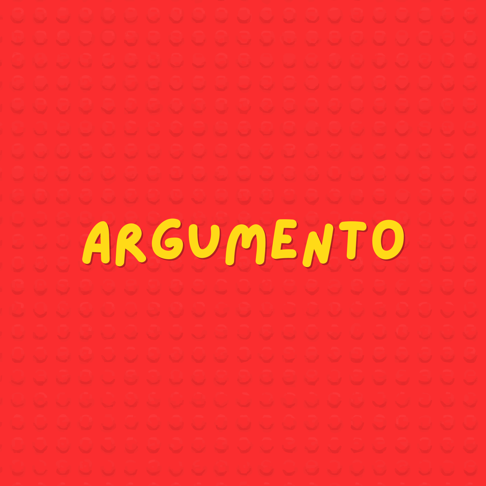
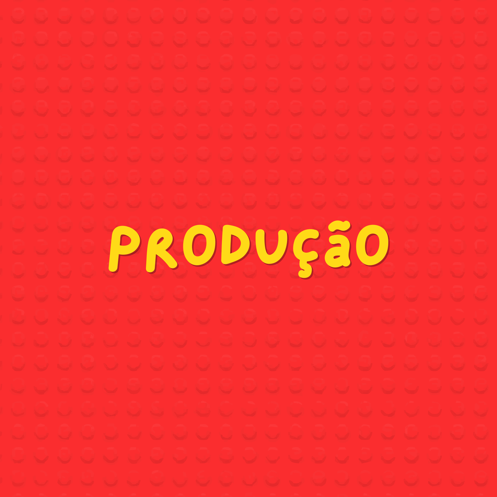
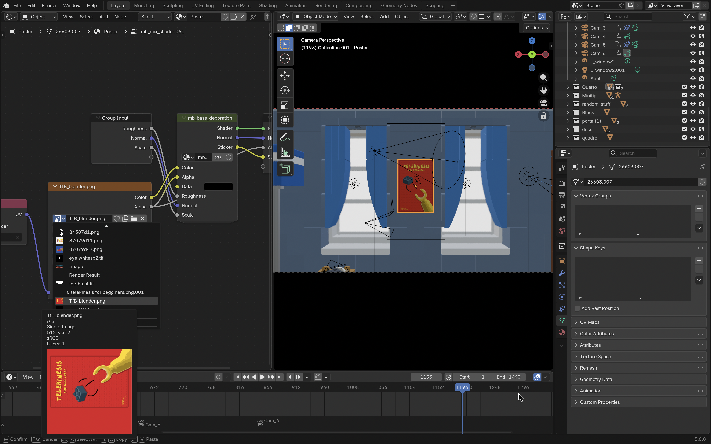
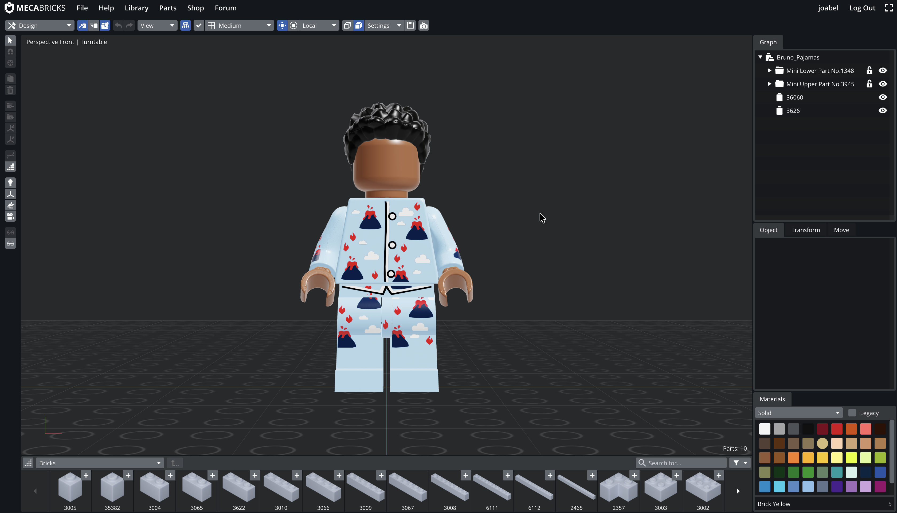
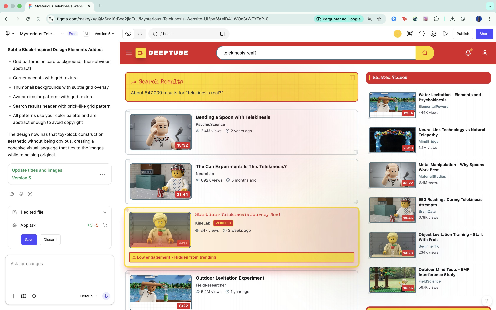
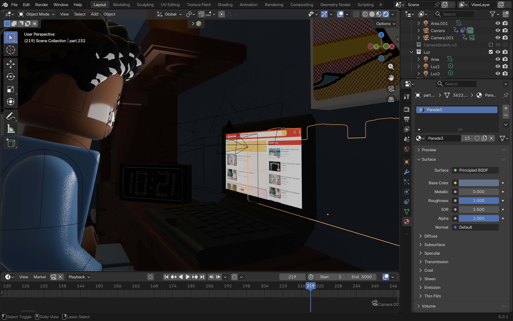

Telekinesis for Beginners
O meu projeto de PAP (Telekinesis for Beginners), uma curta-metragem de animação 3D em estilo brickfilm. O projeto tem como objetivo criar uma narrativa visual centrada no tema da persistência, acompanhando o protagonista que pretende aprender a telecinésia.

O Argumento
A história desenvolve-se à volta das frustrações e pequenas conquistas do protagonista que tenta mover o seu primeiro bloco com a mente. Cada falha reforça a mensagem central: Ser persistente.

A Produção
O projeto está a ser desenvolvido no blender, programa de edição e animação 3D, a edição é feita com o Adobe Premiere e o Davinci Resolve.
Galeria do Projeto



